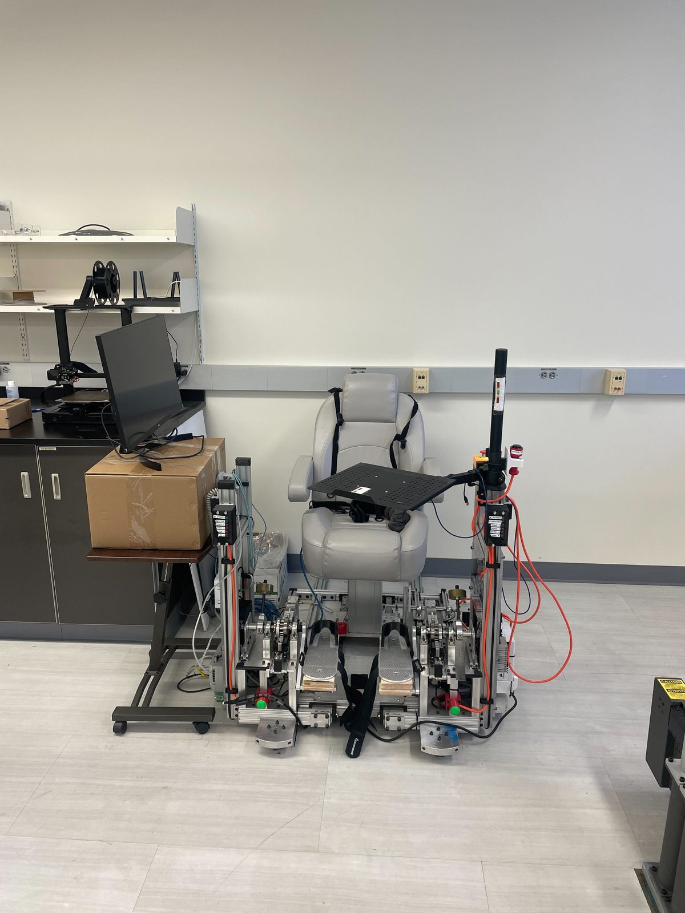

Projects

Legacy Robotics Mars Rover
Assistant Project Manager on an 80+ engineer, 5-division team building UC Irvine's first autonomous Mars-analog rover, coordinating integration, budget, and competition constraints.

3D MRI Degu Brain Atlas
First-author NIH-funded brain-atlas research (MRI segmentation, 222 regions) plus hardware design and fabrication for the lab.

Bridgeless Eyeglasses
A bridgeless eyewear system that removes reliance on the nose. Team project covering CAD, materials selection, FEA validation, and a 3D-printed prototype.

Transcutaneous Spinal Cord Stimulation (tSCS) Study
Human-subjects gait research: Vicon 3D motion capture, spinal cord stimulation trials, and MATLAB analysis of proprioception.

Autocorrelogram Spike-Train Tool
Interactive MATLAB tool analyzing neuronal spike trains from 129 neurons: ACG computation, neuron classification, and firing statistics.

Morse Code Learning Device
Arduino/C++ device that teaches and translates Morse code both ways. Owned the button-timing and input-sensitivity logic.
About
I'm a Biomedical Engineering student at UC Irvine who works at the intersection of hardware and the human body, designing and fabricating mechanical and electronic systems, and turning complex field and laboratory data into clear, usable results.
My experience spans a clinical AR startup, two university research laboratories, and an 80+ engineer rover team. Across each, the constant has been rigor: defining precise criteria for success, measuring against them, and communicating what the data actually shows.
My skills include mechanical design and hands-on fabrication (SolidWorks CAD, FEA, and 3D printing) alongside scientific data and medical-image analysis in MATLAB and ITK-SNAP, and embedded prototyping with Arduino and C++. It's the toolset behind my brain-atlas research, bridgeless-eyewear design, gait-analysis work, and rover contributions.